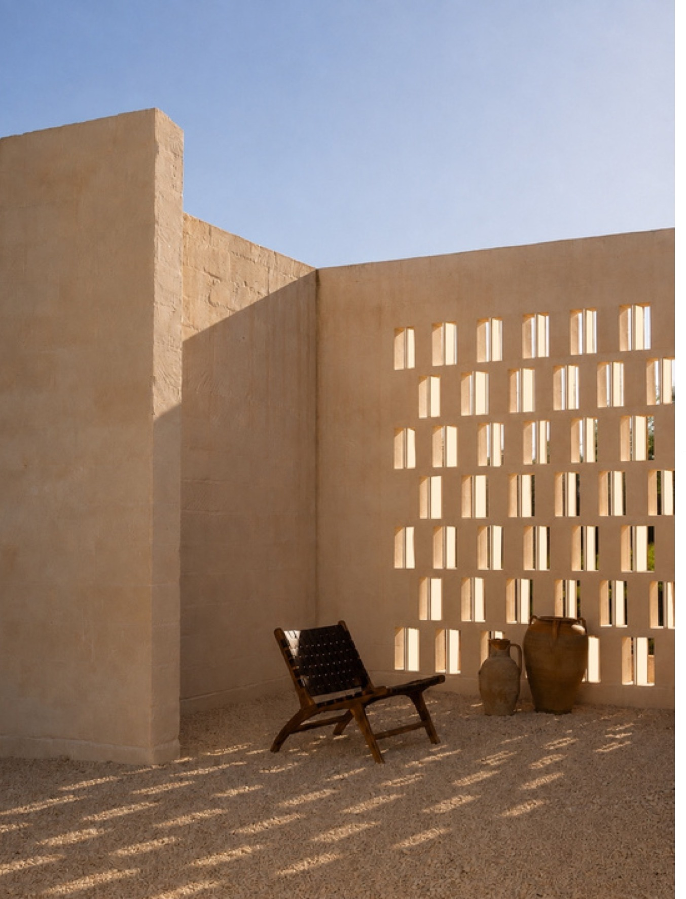

Emma Steyn · Architecture portfolio
Selected works / 2024—2026Spaces for people.
Rooted in place.
Exploring the connection between architecture, landscape and the everyday moments in between.
Architecture in conversation with its surroundings.Scroll to explore ↓
A collection of ideas, explorations and spaces.
From the first sketch to the finer details.
01 / The portfolio
Selected work.
A study in context, material and human experience.

02 / A little about meHi, I’m Emma.
Full portfolio ↓
Hi, I’m Emma.
Always exploring.
I’m studying for a Bachelor of Architectural Studies at the School of Explorative Architecture. My work explores how buildings can respond to their surroundings and create meaningful experiences for the people who use them.
With a background in Human Life Sciences from Stellenbosch University, I bring curiosity, research and a human perspective to design. My experience includes student internships at Hours Clear Architects and SAOTA.
New Architecture Now 2025 finalist
Download my CV ↓Full portfolio ↓